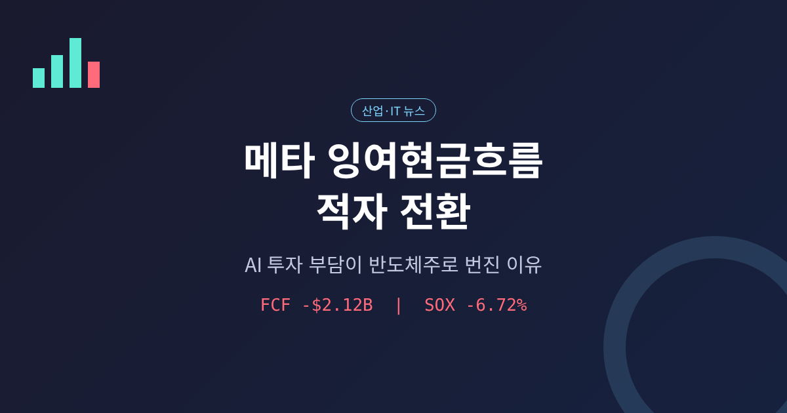
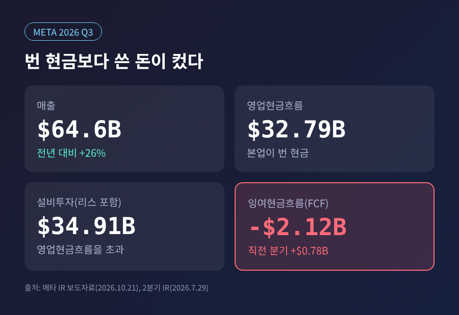
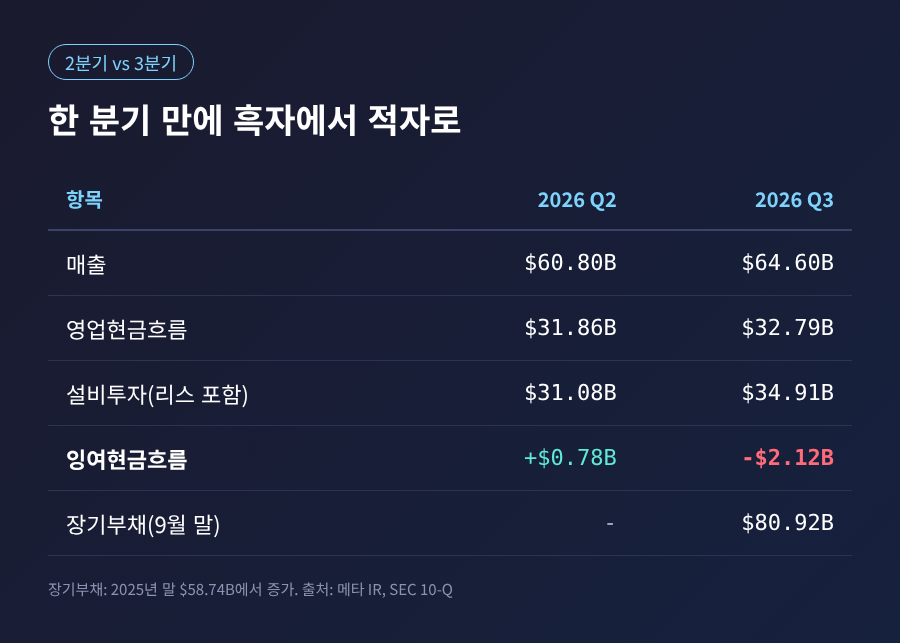
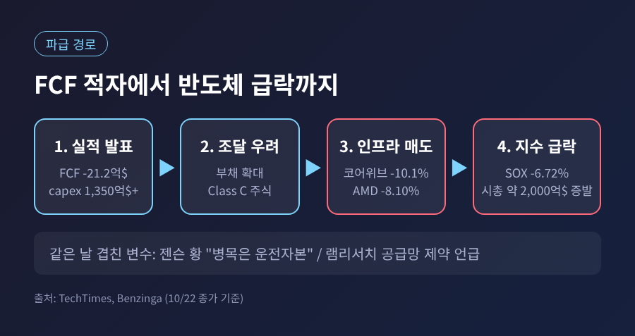
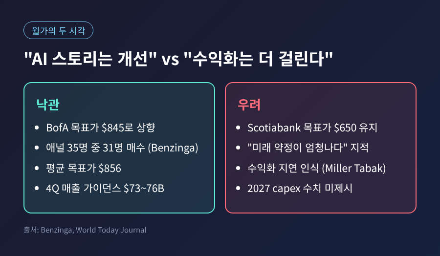
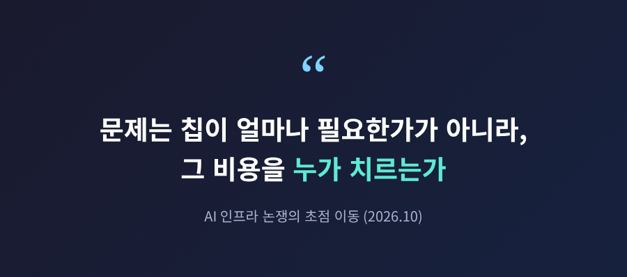

오늘은 메타(Meta Platforms)의 2026년 3분기 실적을 두고 시장이 왜 이렇게 크게 흔들렸는지 정리해 보려 합니다.
핵심은 이렇습니다. 매출은 예상을 웃돌았지만 AI 설비투자가 벌어들인 현금을 넘어섰고, 메타 주가는 약 7% 떨어졌습니다. 이 충격은 엔비디아·AMD·코어위브 등 AI 반도체·인프라 종목으로 번져, 필라델피아 반도체지수가 하루 6.72% 급락했습니다.
메타는 미국 동부시간 10월 21일 장 마감 후 3분기 실적을 발표했습니다. 매출은 646억 달러로 26% 늘었고, 시장 예상치(약 633억 달러)를 웃돌았습니다. 발표 직후 시간외 거래에서는 주가가 2.9% 올랐습니다.
분위기는 컨퍼런스콜을 거치며 바뀌었습니다. 10월 22일 정규장에서 메타는 약 7% 하락 마감했습니다. 이유는 현금흐름 한 줄이었습니다.

영업으로 번 현금은 327.9억 달러였는데, 설비투자(금융리스 원금 상환 포함)는 349.1억 달러였습니다. 차액인 잉여현금흐름(FCF)은 -21.2억 달러입니다. 직전 분기인 2분기에는 +7.84억 달러였으니, 한 분기 만에 흑자에서 적자로 돌아선 것입니다. 미국 경제매체 벤징가는 분기 기준 FCF 적자가 상장 직후인 2012년 2분기 이후 처음이라고 전했습니다.
참고로 3분기 순이익(98.6억 달러)은 52개 주 법무장관과의 소송 합의 충당금 약 98.9억 달러가 반영된 값입니다. 이 일회성 비용을 빼면 주당순이익은 7.40달러로 제시됐습니다. 그러니 이번 하락의 원인은 본업 부진이 아닙니다. 투자 규모의 문제입니다.
메타는 올해 설비투자 가이던스를 1,350억~1,450억 달러로 제시했습니다. 기존 1,300억~1,450억 달러에서 하단만 올렸고, 상단은 그대로입니다. 숫자만 보면 작은 조정입니다. 그런데 9개월 누적 지출을 보면 이야기가 달라집니다.
SEC에 제출된 분기보고서(10-Q) 기준으로 올해 9개월간 부동산·설비 구입에만 830.6억 달러가 나갔습니다. 작년 같은 기간은 483.1억 달러였습니다. 같은 기간 메타는 장기 채권을 순 249.1억 달러어치 발행했고, 장기부채는 지난해 말 587.4억 달러에서 809.2억 달러로 불어났습니다. 현금·유가증권(824.5억 달러)에서 장기부채를 빼면 순현금은 15억 달러 남짓에 그칩니다.

시장이 주목한 것은 방향입니다. 메타는 2027년 설비투자 수치를 내놓지 않았습니다. 상세한 계획은 4분기 실적 때 제시하겠다면서도, 내년에도 공격적으로 투자하겠다는 뜻은 분명히 했습니다. 수전 리 CFO는 의결권 없는 신규 Class C 주식을 두고 "다양한 자금원에 접근할 수 있는 체계를 원한다"는 취지로 설명했습니다. 당장 조달 계획이 있는 것은 아니라고 했지만, 시장은 이를 향후 지분 발행 가능성으로 읽었습니다.
이 Class C 주식은 2027년 1월 새 정관이 발효되면 기존 A·B 주식 1주당 1주씩 배분됩니다. 초기에는 현금이 들어오지 않지만, 이후 발행이 이뤄지면 모든 주주의 지분이 희석됩니다. 창업자 저커버그 측의 의결권은 배분 후 약 60.6%로 유지되는 구조입니다.
메타의 설비투자는 서버와 칩, 반도체 장비 수요로 이어집니다. 그래서 메타의 현금 사정은 곧 공급망의 수요 전망과 맞닿아 있습니다.

10월 22일 종가 기준 낙폭은 다음과 같았습니다. 필라델피아 반도체지수 -6.72%(10,731.98), 엔비디아 -4.40%, AMD -8.10%, 코어위브 -10.1%, 램리서치 -11.76%. 지수 구성 30개 종목이 전부 내렸고, 반도체 시가총액은 하루 새 약 2,000억 달러 줄었다고 테크타임스는 집계했습니다.
여기에 같은 날 나온 두 가지 발언이 불씨를 키웠습니다.
첫째, 엔비디아 젠슨 황 CEO가 네오클라우드(AI 전용 클라우드 업체) 수요는 "차트를 벗어날 만큼" 강하지만 병목은 운전자본, 즉 자금 조달이라고 말했습니다. "해결될 문제"라는 단서도 붙였습니다. 주문이 줄어든 것은 아니라는 뜻이었으나, 시장은 살 돈이 부족하다는 신호로 받아들였습니다. 차입 의존이 큰 코어위브가 가장 크게 흔들린 배경입니다.
둘째, 장비업체 램리서치입니다. 전날 실적에서 분기 매출 82.2억 달러(54% 증가)를 내놓고도, CFO가 단기 공급망 제약으로 가이던스가 제한됐다는 점과 2027년 가시성 문제를 언급했습니다. 호조 속의 경고가 장비주 전반의 매도를 불렀습니다.
이번 급락은 갑자기 나타난 것이 아닙니다. 10월 8일 파이낸셜타임스와 로이터는 OpenAI의 연환산 매출이 9월 말 기준 약 500억 달러라고 전했습니다. 시장에 돌던 680억~700억 달러 기대와는 거리가 있었고, 이날 반도체지수는 약 3.4% 내렸습니다.
다만 이 격차의 상당 부분은 회계 기준 차이라는 반론이 있습니다. 높은 수치에는 클라우드 파트너를 통한 총매출이 섞여 있었고, OpenAI는 자기 몫만 순매출로 잡는다는 설명입니다. 블룸버그는 이튿날 OpenAI가 투자자에게 연말 700억 달러 이상을 제시했다고 전했습니다. 부진인지, 집계 방식의 차이인지는 아직 단정하기 어렵습니다.
분명한 것은 질문이 바뀌었다는 점입니다. 예전엔 "칩이 얼마나 필요한가"를 물었습니다. 지금은 "그 칩값을 누가, 어떤 돈으로 치르는가"를 묻습니다. 10월 12일에는 브로드컴과 인텔 CEO가 자본 접근성과 금융비용 상승이 AI 인프라 확장의 제약이 될 수 있다고 언급하기도 했습니다.

월가의 시각도 갈립니다. 뱅크오브아메리카는 목표주가를 845달러로 올리며 "AI 이야기는 계속 좋아지고 있다"고 평가했습니다. 벤징가 집계로 애널리스트 35명 중 31명이 매수 의견이고 평균 목표가는 856달러입니다. 반면 스코샤은행은 650달러를 유지했는데, 이는 당시 주가 수준보다 낮습니다. 마켓 전략가 매슈 말리(Miller Tabak)는 AI 수익화가 예상보다 훨씬 오래 걸릴 것이라는 인식이 매도의 핵심이라고 짚었습니다.
메타가 광고 사업으로 AI 투자를 감당할 체력은 여전합니다. 4분기 매출 가이던스는 730억~760억 달러로 시장 예상 중간값을 웃돌았습니다. 저커버그는 개인 에이전트 'Muse'를 6주 만에 1,000만 명 넘게 설정했고, 컴퓨팅 효율을 내년까지 10배 이상 높이겠다고 밝혔습니다. 투자가 매출로 돌아오고 있다는 주장입니다.
하지만 현금이 마르는 속도가 매출 증가 속도를 앞서는지는 지켜봐야 합니다. 앞으로 확인할 일정은 크게 세 가지입니다.
한국 증시도 이튿날 하락 압력을 받았습니다. 다만 코스피 흐름은 경제 편에서 따로 다루었으니 여기서는 생략합니다.
정리하면 이렇습니다.
이번 사건은 AI 수요가 꺼졌다는 신호가 아닙니다. 수요를 감당할 돈의 출처에 처음으로 시장의 눈이 쏠렸다는 신호에 가깝습니다.

AI 투자의 성패는 기술보다 장부에서 먼저 가려질지도 모릅니다. 메타의 다음 분기 숫자가 그 답에 한 걸음 더 가까이 데려다줄 것입니다.
※ 이 글은 공개된 보도와 기업 공시를 바탕으로 한 해설이며, 특정 종목의 매수·매도를 권유하지 않습니다. 수치는 보도 시점 기준이고 매체별로 장중·종가 기준이 달라 일부 차이가 있을 수 있습니다.